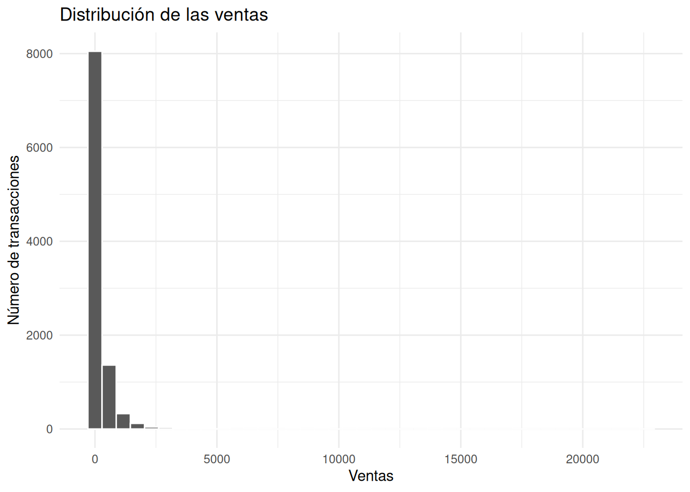
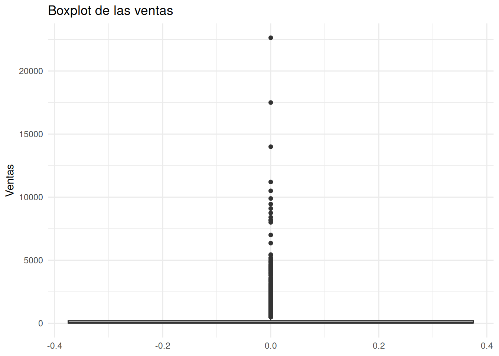
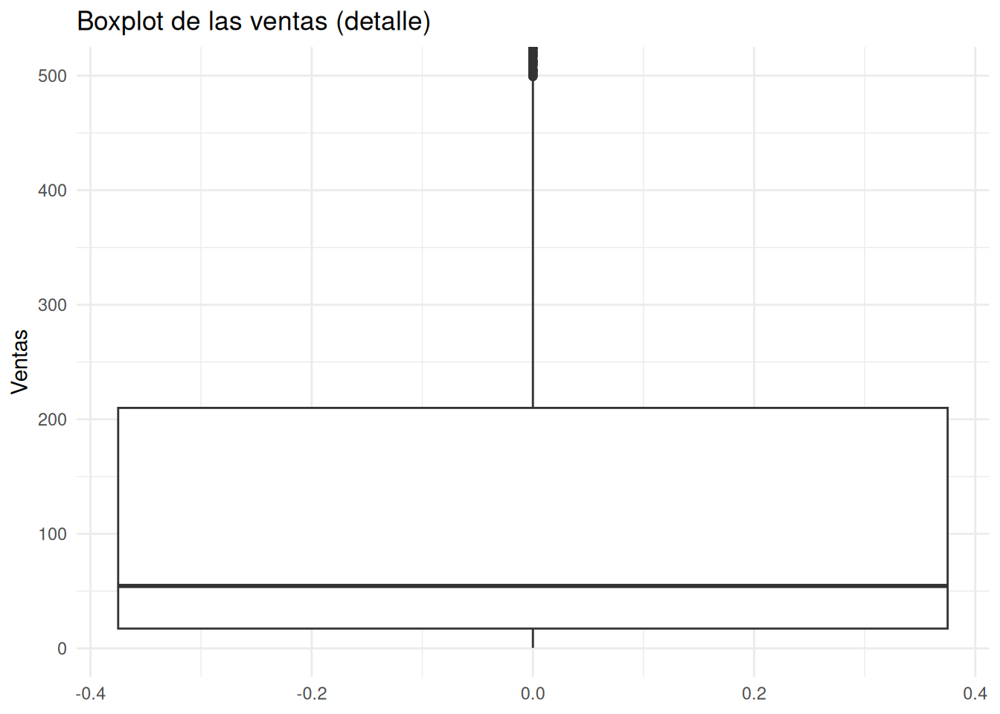
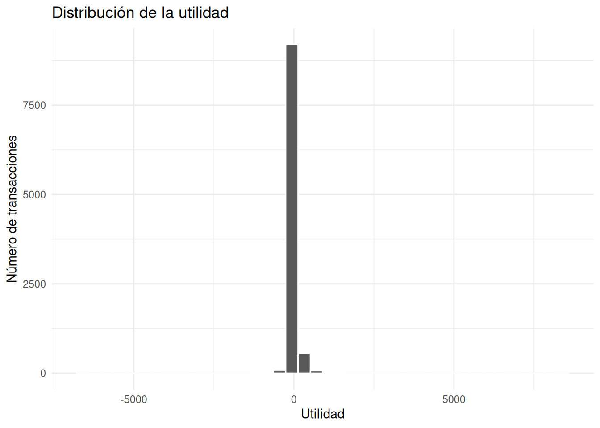
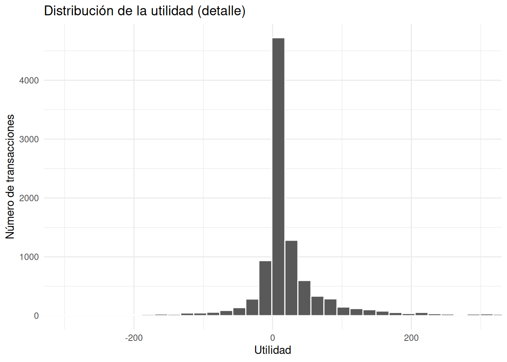
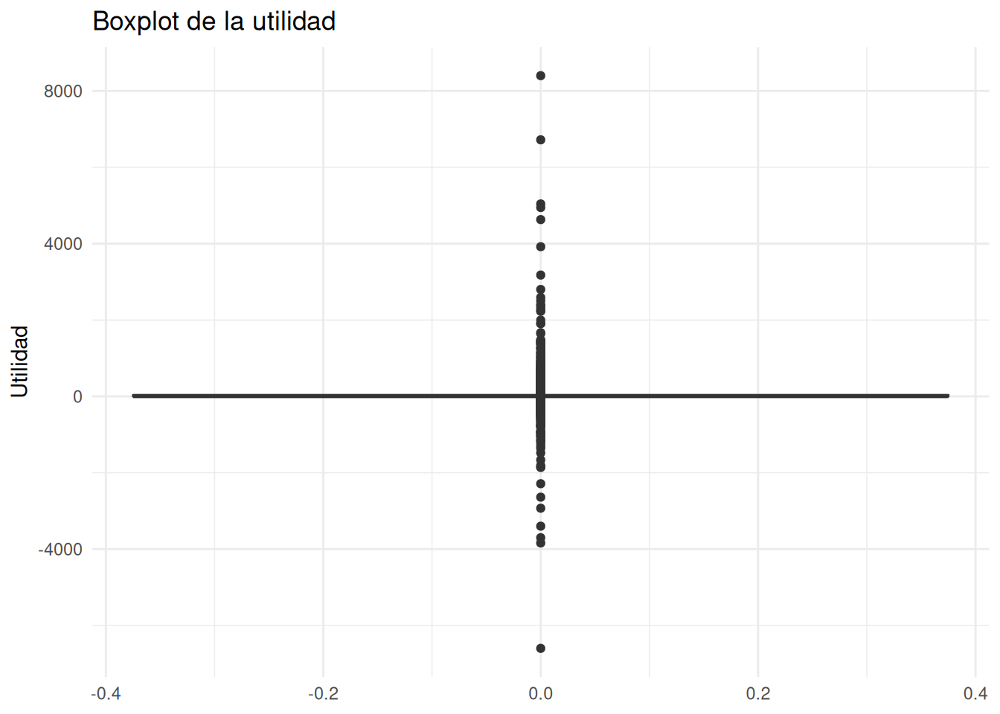
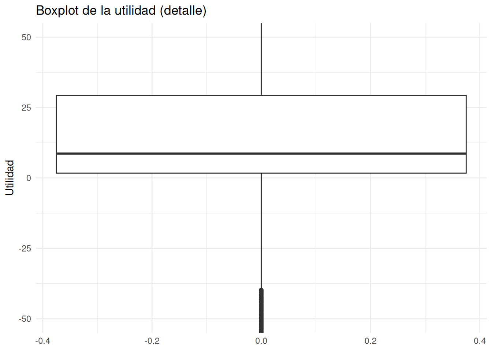
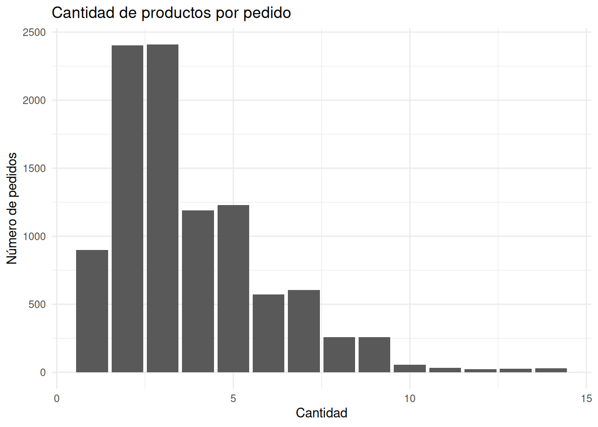
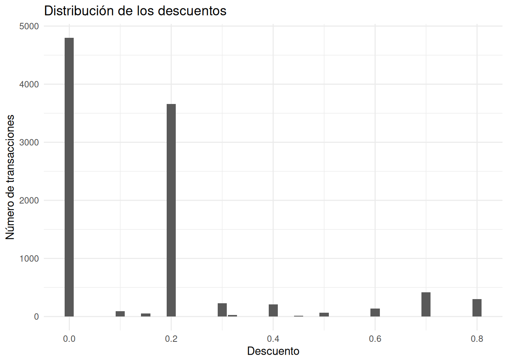
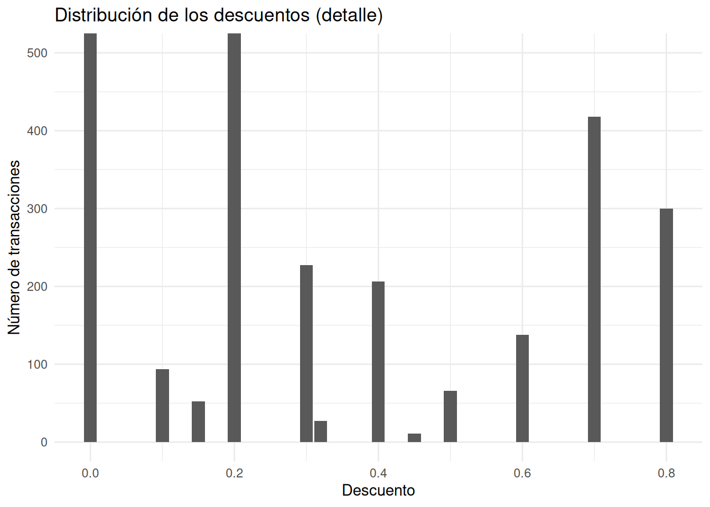

skim(sales)¿Qué indicadores describen mejor el desempeño de una empresa?
Retail
Visualización
Descubra qué métricas merece la pena revisar antes de tomar decisiones de negocio utilizando el dataset Superstore Sales y un análisis exploratorio orientado a la toma de decisiones.
La pregunta de negocio
Las organizaciones modernas generan una enorme cantidad de indicadores. Ventas, utilidad, descuentos, número de pedidos, unidades vendidas y muchas otras métricas aparecen diariamente en informes y paneles de control.
Sin embargo, disponer de muchos indicadores no garantiza tomar mejores decisiones.
Una empresa puede incrementar sus ventas y, aun así, deteriorar su rentabilidad. Del mismo modo, un elevado volumen de productos vendidos podría ser consecuencia de descuentos tan agresivos que terminen reduciendo las ganancias.
Por ello, antes de construir modelos predictivos o desarrollar análisis más sofisticados, conviene responder una pregunta mucho más sencilla:
¿Qué indicadores deberíamos revisar antes de tomar cualquier decisión?
En este artículo utilizaremos el conjunto de datos Superstore Sales para responder esa pregunta. Nuestro objetivo no será construir modelos bayesianos, sino desarrollar la intuición analítica necesaria para reconocer cuáles son las métricas que mejor describen el desempeño de una empresa y por qué ninguna de ellas debería interpretarse de manera aislada.
Comprendiendo el problema
Cuando una empresa atraviesa un buen o un mal momento, la explicación rara vez se encuentra en un único indicador.
Las ventas muestran cuánto dinero ingresa al negocio, pero no cuánto valor genera realmente. La utilidad refleja la rentabilidad de cada operación, aunque puede verse afectada por unas pocas transacciones extraordinarias. El volumen de productos vendidos ayuda a comprender el comportamiento de los clientes, mientras que los descuentos permiten evaluar la intensidad de la estrategia comercial.
En este artículo trabajaremos con cuatro indicadores fundamentales:
- Sales: ingresos obtenidos en cada transacción.
- Profit: utilidad generada por cada venta.
- Quantity: número de productos incluidos en cada pedido.
- Discount: descuento aplicado a la transacción.
Cada uno responde una pregunta distinta.
Las ventas describen el tamaño económico del negocio.
La utilidad muestra si esas ventas realmente generan valor.
La cantidad vendida refleja el volumen de productos comercializados.
Finalmente, los descuentos ayudan a comprender el esfuerzo promocional necesario para concretar las ventas.
Ninguno de estos indicadores es suficiente por sí solo. El propósito de este análisis es comprender cómo se comporta cada uno antes de estudiar las relaciones entre ellos en los siguientes artículos de esta colección.
Explorando los datos
Antes de interpretar cualquier indicador conviene conocer el conjunto de datos con el que trabajaremos. Para esto usamos la función skim():
El conjunto de datos contiene 9 994 transacciones y 21 variables, de las cuales 16 son categóricas y 5 numéricas. Un aspecto especialmente tranquilizador es que ninguna de las variables presenta valores faltantes, por lo que podemos centrar nuestra atención en comprender el comportamiento del negocio sin realizar procesos adicionales de limpieza.
Antes de estudiar cada variable individualmente, resulta útil construir un pequeño resumen que nos permita dimensionar la actividad de la empresa.
# A tibble: 1 × 5
Observaciones Ventas_totales Utilidad_total Productos_vendidos
<int> <dbl> <dbl> <dbl>
1 9994 2297201. 286397. 37873
# ℹ 1 more variable: Descuento_promedio <dbl>Este resumen ofrece una primera fotografía del negocio.
Durante el período analizado se registraron 9 994 pedidos, que generaron aproximadamente 2,30 millones de dólares en ventas y 286 mil dólares de utilidad, con un total de 37 873 productos vendidos.
Además, el descuento promedio fue del 15,6 %, un valor suficientemente alto como para justificar un análisis más detallado de esta variable en futuras publicaciones.
Sin embargo, estos valores agregados cuentan únicamente una parte de la historia. Dos empresas pueden presentar exactamente las mismas ventas totales y, aun así, comportarse de forma completamente distinta si una depende de unas pocas operaciones muy grandes y la otra de miles de ventas pequeñas.
Por esta razón, el siguiente paso consiste en estudiar la distribución de cada indicador.
¿Cómo se distribuyen las ventas?
La variable Sales representa el ingreso generado por cada transacción.
Antes de calcular promedios o comparar segmentos resulta útil responder una pregunta muy sencilla:
¿La empresa realiza muchas ventas pequeñas o unas pocas ventas de gran tamaño?
El siguiente histograma nos ayuda a responder esa pregunta.

La distribución de las ventas presenta una marcada asimetría hacia la derecha.
La inmensa mayoría de las transacciones corresponde a ventas de bajo valor económico. A medida que aumenta el monto de la venta, el número de operaciones disminuye rápidamente. De hecho, las ventas superiores a 1 000 dólares representan solo una pequeña fracción del total de transacciones.
Desde una perspectiva empresarial, esto significa que la actividad cotidiana de la empresa se sostiene principalmente sobre un gran número de pedidos relativamente pequeños, mientras que las ventas de gran valor constituyen eventos poco frecuentes.
Esta característica tiene una consecuencia importante: el promedio de ventas puede verse influido por unas pocas operaciones extraordinariamente grandes, por lo que no siempre representa adecuadamente una transacción típica.
Para comprender mejor este comportamiento resulta útil observar el diagrama de caja.

El boxplot confirma la presencia de numerosos valores atípicos.
Aunque existen algunas ventas que superan los 15 000 dólares e incluso una cercana a los 22 500 dólares, estas operaciones son claramente excepcionales dentro del conjunto de datos.
No obstante, la presencia de estos valores extremos dificulta apreciar el comportamiento de la mayor parte de las transacciones. Para ello resulta útil realizar un acercamiento sobre la zona donde se concentra la mayoría de las ventas.

Al limitar el eje vertical a los primeros 500 dólares aparece una imagen mucho más representativa del negocio cotidiano.
La mediana de las ventas se sitúa alrededor de 55 dólares, mientras que las ventas superiores a 200 dólares ya comienzan a comportarse como valores atípicos respecto al patrón habitual de la empresa.
En otras palabras, aunque ocasionalmente se realizan ventas muy elevadas, la actividad comercial diaria está dominada por operaciones considerablemente más pequeñas.
Este resultado deja una primera lección importante para cualquier analista.
Evaluar el desempeño del negocio únicamente mediante la venta promedio podría conducir a una imagen demasiado optimista del tamaño habitual de las transacciones, ya que unas pocas operaciones excepcionales influyen de forma importante sobre ese indicador.
Antes de extraer conclusiones sobre el desempeño general de la empresa todavía debemos responder una pregunta aún más importante:
¿Cuánta utilidad generan realmente esas ventas?
La respuesta comienza estudiando la distribución de la utilidad.
¿Qué nos dice la utilidad sobre el negocio?
Las ventas muestran cuánto dinero ingresa a la empresa, pero por sí solas no indican si ese dinero realmente genera valor.
Desde la perspectiva de la toma de decisiones, la utilidad suele ser un indicador mucho más informativo. Una empresa puede incrementar sus ventas de manera considerable y, aun así, obtener beneficios muy modestos si ese crecimiento depende de descuentos excesivos o de productos con márgenes reducidos.
Por ello, el siguiente paso consiste en estudiar cómo se distribuye la utilidad de cada transacción.

A primera vista observamos que la utilidad también presenta una distribución muy concentrada alrededor de valores bajos. Sin embargo, la presencia de algunos valores extremos dificulta apreciar dónde se encuentra la mayor parte de las transacciones.
Por ello resulta útil realizar un acercamiento sobre la región central de la distribución.

Con este acercamiento aparece con claridad el comportamiento habitual del negocio.
La mayoría de las transacciones generan utilidades cercanas a 20 dólares, mientras que tanto las pérdidas importantes como las ganancias extraordinarias representan situaciones relativamente poco frecuentes.
Desde una perspectiva empresarial, este resultado es especialmente relevante.
El negocio parece sostenerse sobre un gran número de operaciones con ganancias relativamente pequeñas. Aunque existen ventas muy rentables, no constituyen el comportamiento típico de la empresa.
Esta observación también ayuda a interpretar correctamente la utilidad total obtenida anteriormente. Una utilidad agregada elevada no implica necesariamente que cada pedido sea altamente rentable; con frecuencia es el resultado de acumular miles de pequeñas ganancias.
Para complementar esta interpretación analizaremos ahora el diagrama de caja.

El boxplot confirma la existencia de valores atípicos tanto positivos como negativos.
Existen algunas transacciones con pérdidas superiores a 1 000 dólares, mientras que otras generan utilidades superiores a 8 000 dólares. Aunque estos casos son poco frecuentes, tienen capacidad para modificar significativamente indicadores como la utilidad promedio.
Una vez más, conviene observar con mayor detalle la zona donde se concentra la mayoría de las observaciones.

El acercamiento muestra que la mediana de la utilidad se sitúa alrededor de 9 dólares, mientras que la mitad central de las transacciones genera aproximadamente entre 2 y 30 dólares de utilidad.
En otras palabras, el comportamiento cotidiano del negocio está dominado por ganancias relativamente modestas. Las utilidades extraordinarias existen, pero representan excepciones más que la regla.
Esta diferencia entre el comportamiento habitual y los casos extremos constituye otra razón para no evaluar el desempeño únicamente mediante promedios.
¿Cuántos productos compra un cliente en cada pedido?
Hasta ahora hemos estudiado el valor económico de las transacciones. Sin embargo, también resulta útil comprender el volumen físico de cada pedido.
La variable Quantity indica cuántos productos fueron incluidos en cada compra.

La mayor parte de los pedidos incluye entre 2 y 3 productos, con aproximadamente 2 500 transacciones para cada uno de estos niveles.
También son relativamente frecuentes los pedidos de 1, 4 y 5 productos, mientras que las compras de mayor tamaño disminuyen rápidamente.
Desde la perspectiva del negocio, este resultado sugiere que el cliente típico realiza pedidos pequeños. Las compras de gran volumen existen, pero representan una proporción reducida del total.
Esta información será especialmente útil en artículos posteriores, cuando analicemos si los pedidos con mayor cantidad de productos también generan mayores ingresos o mejores márgenes de utilidad.
¿Qué papel desempeñan los descuentos?
Los descuentos constituyen una de las herramientas comerciales más utilizadas para estimular las ventas.
Sin embargo, también representan uno de los principales factores que pueden reducir la rentabilidad de una empresa.
Antes de estudiar su relación con la utilidad, conviene conocer cómo se utilizan.

El gráfico muestra un patrón muy claro.
Aproximadamente 4 500 transacciones se realizaron sin aplicar ningún descuento, mientras que cerca de 3 500 pedidos recibieron un descuento del 20 %.
El resto de los niveles de descuento aparecen con mucha menor frecuencia, aunque todavía pueden observarse algunos pedidos con descuentos muy elevados.
Para apreciar mejor esas categorías menos frecuentes realizamos un nuevo acercamiento.

Con este zoom resulta evidente que todos los descuentos distintos del 0 % y del 20 % aparecen en menos de 450 transacciones.
En términos empresariales, esto sugiere que la estrategia comercial de la compañía descansa principalmente sobre dos escenarios: vender al precio habitual o aplicar un descuento moderado del 20 %. Los descuentos muy agresivos existen, pero parecen utilizarse únicamente en situaciones específicas.
Naturalmente, este resultado no permite concluir si los descuentos son beneficiosos o perjudiciales para el negocio. Para responder esa pregunta será necesario estudiar cómo se relacionan con la utilidad, un tema que abordaremos en una publicación posterior.
Comparando los principales indicadores
Después de explorar cada variable por separado, resulta útil resumir el papel que desempeña cada indicador dentro del análisis.
| Indicador | ¿Qué aporta al análisis? | ¿Qué podría ocultar si se interpreta de forma aislada? |
|---|---|---|
| Sales | Mide el tamaño económico de las ventas. | No informa si esas ventas generan ganancias. |
| Profit | Refleja la rentabilidad de cada transacción. | Puede verse influido por unos pocos valores extremos. |
| Quantity | Describe el volumen físico de los pedidos. | No refleja el valor económico de las ventas. |
| Discount | Resume la intensidad de la estrategia comercial. | No indica si los descuentos mejoran o empeoran la rentabilidad. |
El principal aprendizaje de este análisis es que ningún indicador resume por sí solo el desempeño de una empresa.
Las mejores decisiones surgen cuando estas métricas se interpretan conjuntamente y dentro del contexto del negocio.
Recomendaciones para el negocio
Después de recorrer los principales indicadores del conjunto de datos, resulta evidente que evaluar el desempeño de una empresa exige mucho más que observar una única cifra.
Cada indicador aporta una perspectiva distinta sobre el negocio y, precisamente por ello, ninguno debería utilizarse de manera aislada.
Si un analista tuviera que elaborar un informe ejecutivo a partir de esta información, probablemente recomendaría revisar de forma sistemática los siguientes aspectos:
- la evolución de las ventas para comprender el tamaño económico del negocio;
- la utilidad para evaluar si ese crecimiento realmente genera valor;
- la cantidad de productos vendidos para entender el comportamiento habitual de los clientes;
- la política de descuentos para identificar posibles riesgos sobre la rentabilidad.
Más importante aún, estos indicadores deben interpretarse conjuntamente.
Por ejemplo, un incremento de las ventas podría parecer una excelente noticia. Sin embargo, si ese crecimiento estuviera acompañado por una reducción de la utilidad, la conclusión cambiaría por completo. Del mismo modo, un aumento en la cantidad de productos vendidos podría deberse simplemente a una estrategia comercial basada en descuentos agresivos.
En otras palabras, los indicadores no compiten entre sí; se complementan.
El verdadero trabajo del analista consiste en integrarlos para construir una visión coherente del negocio antes de proponer cualquier acción.
¿Qué aprendimos?
Aunque este artículo no ha utilizado modelos bayesianos, sí ha cumplido un objetivo fundamental: comprender el contexto del problema antes de intentar resolverlo.
A lo largo del análisis encontramos varios patrones que merecen atención.
Las ventas presentan una distribución fuertemente asimétrica. La mayor parte de la actividad comercial está compuesta por pedidos relativamente pequeños, mientras que unas pocas operaciones de gran valor elevan considerablemente el promedio.
La utilidad muestra un comportamiento similar. La empresa obtiene la mayor parte de sus ganancias a partir de muchas transacciones con beneficios modestos, mientras que las utilidades extraordinarias representan casos poco frecuentes.
La cantidad de productos vendidos también revela un patrón claro: los clientes suelen realizar pedidos pequeños, generalmente de dos o tres artículos.
Finalmente, los descuentos muestran que la estrategia comercial se concentra principalmente en dos escenarios: ventas sin descuento y ventas con un descuento del 20 %, mientras que los descuentos más agresivos son poco habituales.
Estos resultados, por sí solos, no indican qué decisiones debería tomar la empresa. Sin embargo, permiten formular preguntas mucho más interesantes que las que teníamos al comenzar el análisis.
Por ejemplo:
- ¿Los descuentos reducen sistemáticamente la utilidad?
- ¿Las ventas de mayor valor generan también mayores beneficios?
- ¿Los pedidos más grandes son realmente más rentables?
- ¿Existen categorías de productos donde estos patrones cambien?
Responder estas preguntas requerirá estudiar las relaciones entre las variables y, más adelante, construir modelos que incorporen explícitamente la incertidumbre.
Ese será el siguiente paso en nuestra evolución como analistas.
Reflexión bayesiana
Existe una idea muy extendida según la cual el análisis de datos comienza cuando construimos un modelo estadístico.
En realidad, ocurre exactamente lo contrario.
El análisis comienza mucho antes, cuando intentamos comprender el problema que queremos resolver y aprendemos a distinguir qué información resulta verdaderamente relevante para tomar una decisión.
En este artículo no necesitábamos modelos bayesianos para descubrir que unas pocas ventas extraordinarias pueden modificar la percepción del desempeño de la empresa, ni para reconocer que la utilidad aporta información diferente a las ventas o que los descuentos constituyen una variable estratégica.
Lo que sí hemos hecho es construir una base sólida para los análisis que vendrán después.
A medida que avancemos en esta colección comenzaremos a estudiar cómo se relacionan estos indicadores entre sí y utilizaremos modelos bayesianos para cuantificar la incertidumbre de esas relaciones.
Porque esa es, precisamente, una de las principales fortalezas del enfoque bayesiano.
No pretende eliminar la incertidumbre.
Nos ayuda a comprenderla para tomar decisiones mejor fundamentadas.
Apéndice — Código completo
El cuerpo principal del artículo ocultó el código para facilitar la lectura y centrar la atención en la interpretación de los resultados.
A continuación reunimos todos los bloques utilizados durante el análisis en el mismo orden cronológico en que fueron ejecutados. Cada bloque utiliza #| eval: false, por lo que el documento no volverá a ejecutar el análisis durante el renderizado y el código podrá copiarse fácilmente para reutilizarlo.
Cargar paquetes
library(tidyverse)
library(ggplot2)
library(skimr)Importar los datos
sales <- read_csv("data/superstore.csv")Explorar la estructura del dataset
skim(sales)Resumen descriptivo
sales %>%
summarise(
Observaciones = n(),
Ventas_totales = sum(Sales),
Utilidad_total = sum(Profit),
Productos_vendidos = sum(Quantity),
Descuento_promedio = mean(Discount)
)Distribución de las ventas
ggplot(sales, aes(x = Sales)) +
geom_histogram(bins = 40, color = "white") +
labs(
title = "Distribución de las ventas",
x = "Ventas",
y = "Número de transacciones"
) +
theme_minimal()
ggplot(sales, aes(y = Sales)) +
geom_boxplot() +
labs(
title = "Boxplot de las ventas",
y = "Ventas"
) +
theme_minimal()
ggplot(sales, aes(y = Sales)) +
geom_boxplot() +
coord_cartesian(ylim = c(0, 500)) +
labs(
title = "Boxplot de las ventas (detalle)",
y = "Ventas"
) +
theme_minimal()Distribución de la utilidad
ggplot(sales, aes(x = Profit)) +
geom_histogram(bins = 40, color = "white") +
labs(
title = "Distribución de la utilidad",
x = "Utilidad",
y = "Número de transacciones"
) +
theme_minimal()
ggplot(sales, aes(x = Profit)) +
geom_histogram(bins = 800, color = "white") +
coord_cartesian(xlim = c(-300, 300)) +
labs(
title = "Distribución de la utilidad (detalle)",
x = "Utilidad",
y = "Número de transacciones"
) +
theme_minimal()
ggplot(sales, aes(y = Profit)) +
geom_boxplot() +
labs(
title = "Boxplot de la utilidad",
y = "Utilidad"
) +
theme_minimal()
ggplot(sales, aes(y = Profit)) +
geom_boxplot() +
coord_cartesian(ylim = c(-50, 50)) +
labs(
title = "Boxplot de la utilidad (detalle)",
y = "Utilidad"
) +
theme_minimal()Distribución de la cantidad de productos
ggplot(sales, aes(x = Quantity)) +
geom_bar() +
labs(
title = "Cantidad de productos por pedido",
x = "Cantidad",
y = "Número de pedidos"
) +
theme_minimal()Distribución de los descuentos
ggplot(sales, aes(x = Discount)) +
geom_bar() +
labs(
title = "Distribución de los descuentos",
x = "Descuento",
y = "Número de transacciones"
) +
theme_minimal()
ggplot(sales, aes(x = Discount)) +
geom_bar() +
coord_cartesian(ylim = c(0, 500)) +
labs(
title = "Distribución de los descuentos (detalle)",
x = "Descuento",
y = "Número de transacciones"
) +
theme_minimal()